Vats & Param
THE DENTISTS
Longevity & Whole-Body Focused Dentistry
THE DENTISTS
Longevity & Whole-Body Focused Dentistry
Oral health is inseparable from overall health, influencing immunity, inflammation, nutrition, and healthy ageing.
The condition of the mouth often reflects and affects the condition of the body.
By understanding these connections, care can move beyond treatment alone to support long-term health and prevention.
More than dentistry, an environment designed to support comfort, prevention, and lifelong health.
We look beyond the tooth to understand the whole person. Your oral health is a window into your systemic health and we use it as one.
Great care begins with understanding.
Designed for Care.
Our clinic is designed to the highest standards of infection control and safety for every person because a clean environment is the foundation of good care.
Oral health is part of whole-body health.
Supporting wellbeing at every stage of life.
Every visit begins with understanding not just your teeth, but your whole body. Our method is built on time, diagnostics, and root-cause thinking.
How We Approach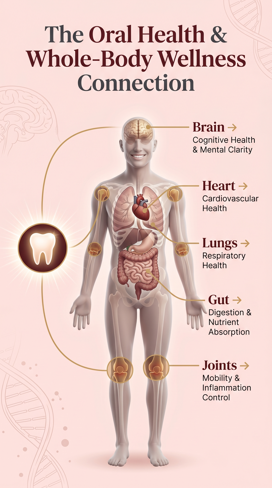
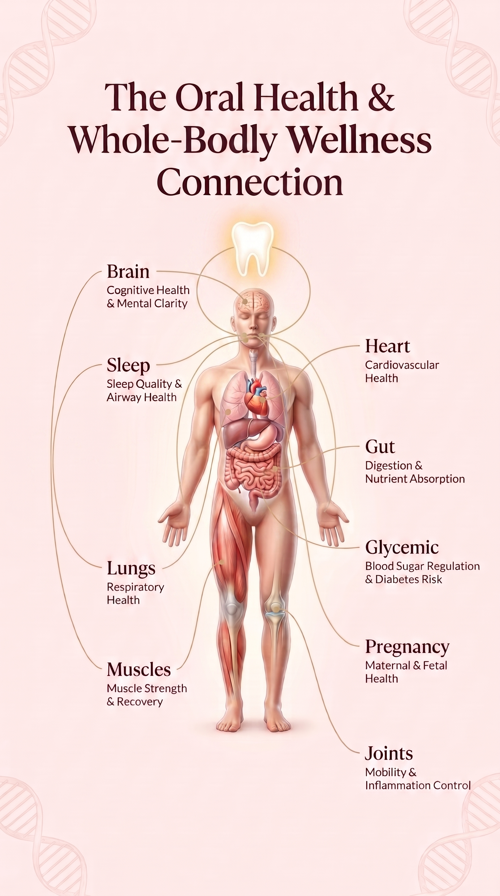
Your mouth shapes your mind
Oral infections release inflammatory cytokines that cross the blood-brain barrier, directly affecting cognition, mood, and neural clarity. Chronic periodontal disease has been linked to accelerated cognitive decline.
Every breath carries what your mouth holds
Oral bacteria can be aspirated into the lower respiratory tract, triggering infections and worsening conditions like COPD and pneumonia. Poor oral hygiene dramatically increases pulmonary infection risk.
Gum disease and your cardiovascular system
Periodontal bacteria enter the bloodstream, attaching to arterial plaques and triggering inflammatory responses that narrow vessels. Studies show gum disease patients face nearly twice the risk of heart disease.
Digestion begins in the mouth
The oral microbiome is the gateway to your gut. Imbalanced oral bacteria disrupt the digestive ecosystem, while compromised chewing reduces nutrient absorption and burdens the entire digestive system.
Your bite shapes your skeleton
Bite imbalance and jaw misalignment create compensatory postural patterns throughout the body. Periodontal inflammation also mimics and worsens rheumatoid arthritis the same immune pathways are activated.
Muscle function impacts metabolism, posture, airway patency, and overall resilience
Muscle function impacts metabolism, posture, airway patency, and overall resilience.
Pregnancy and oral health: A critical window for mother and baby
Hormonal shifts during pregnancy amplify gum inflammation and periodontal disease risk. Untreated gum disease during pregnancy increases the risk of premature birth, low birth weight, and gestational complications. Regular dental care during pregnancy protects both mother and developing child.
Blood sugar dysregulation impairs immune response and accelerates periodontal destruction
Blood sugar dysregulation impairs immune response and accelerates periodontal destruction.
Poor sleep quality elevates inflammatory markers and impairs tissue healing and immune function
Poor sleep quality elevates inflammatory markers and impairs tissue healing and immune function.
We believe dentistry goes beyond teeth. The Vats & Param Method is a systematic, evidence-based approach that combines deep diagnostic discovery with root-cause analysis to ensure comprehensive care.
Meet the visionary dentists behind our practice
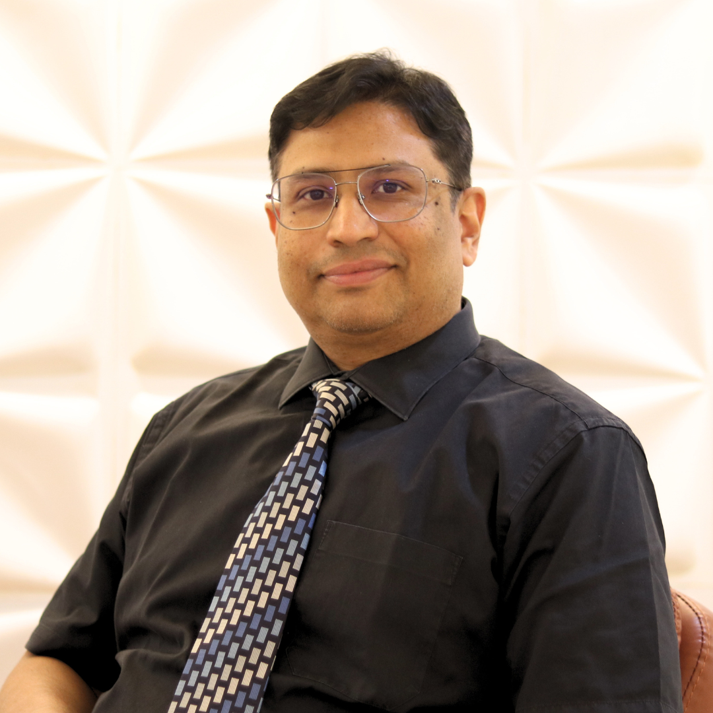
Health care thought leader entrepreneur
30+ years of diagnostic-driven dentistry focused on root-cause analysis and whole-body wellness integration. Visionary pioneer in systems-based dental care.
View Full Profile →Health care entrepreneur
20+ years specialist in periodontics with a systems-thinking approach. Expert in long-term oral health preservation and strategic practice management.
View Full Profile →Founded on the belief that oral health is inseparable from overall wellness, Vats & Param delivers comprehensive, personalized care with diagnostic precision for every individual.
Vats & Param was established with a singular vision: to transform how dentistry is practiced. With over 50 years of combined clinical experience, we treat the whole person, not isolated symptoms. We are trained under standardized global protocols and continuously update our methods with the latest evidence-based research.
To provide diagnostic-first, root-cause focused dental care that treats the whole person delivering lasting health, not temporary relief.
Before we examine your teeth, we get to know you. Your health, your experiences, your concerns, and what matters most to you. Good care begins with understanding.
No jargon, no assumptions. We take the time to explain what we find, why it matters, and what your options are so every decision is yours to make, fully informed.
Our relationship doesn't end at the chair. We check in, we follow up, and we remain available because good dental care is a partnership, not a transaction.
A systematic, evidence-based framework that ensures every person receives comprehensive, root-cause focused care from start to finish.
We don't just "check" your teeth. We map your entire biological state using 3D imaging and systemic analysis.
Our doctors spend hours analyzing the "why" behind your symptoms to ensure we're not just patching a problem.
Every complex case is reviewed by our inter-disciplinary team to design a robust, long-term health roadmap.
See how we build your personalized health blueprint through visual precision.
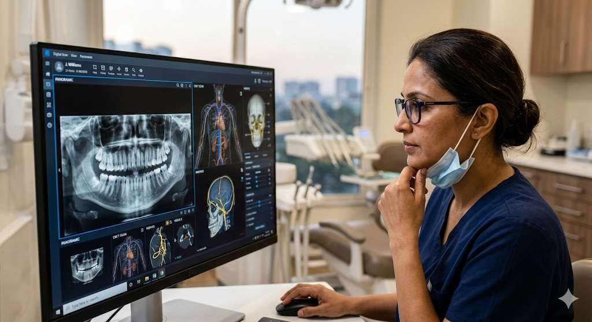
Connecting oral findings to whole-body systems.
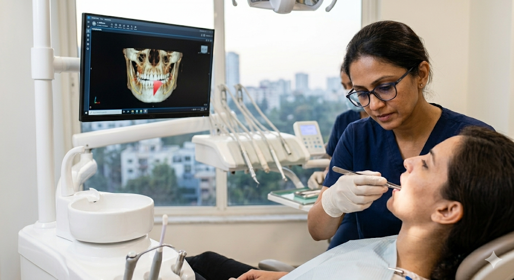
Evaluating jaw structure, airway, and bite dynamics.
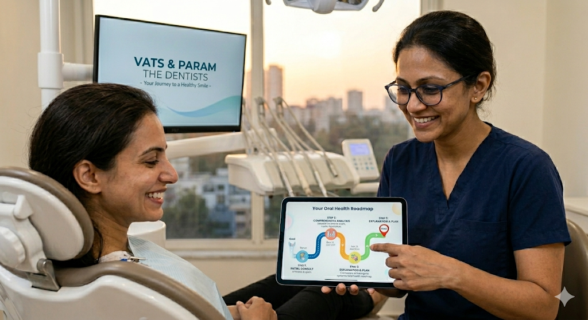
Designing the roadmap to lasting whole-body health.
This is not a routine dental check-up. It is a structured evaluation designed to understand how your oral condition connects to your overall health.
Detailed evaluation of structural integrity and periodontal health.
Analyzing how your upper and lower teeth meet and how your jaw joints function.
Evaluating airway volume and breathing patterns that influence sleep and energy levels.
Indicators of bacterial balance that drive inflammation and systemic health.
Mapping functional patterns of facial and neck muscles that contribute to pain.
Understanding habits, nutrition, and stress factors contributing to your condition.
We specialize in helping persons who are looking for clarity and long-term health, rather than just symptom relief.
Persons with dental issues that keep returning despite treatment.
Those with headaches, fatigue, or jaw pain without a clear cause.
Individuals seeking durable health rather than temporary fixes.
Those interested in preventive, whole-body health optimization.
Understanding your story, concerns, and health goals.
Comprehensive clinical, functional, and radiographic evaluation.
Clear insights into your oral and whole-body health.
A personalized roadmap for long-term health and longevity.
Schedule a comprehensive consultation and let us build your personalized care blueprint.
Identifying risks, conditions, and opportunities for prevention before problems develop.
Precision dental treatments and rehabilitation for lasting structural health.
Where oral health connects to the whole body, affecting function, breathing, and systemic wellbeing.
Tailored care for every life stage, ability, and community need.
Trained under standardized global protocols with decades of combined experience in diagnostic and precision dentistry.
Clinical Director and Senior Partner
Clinical Head and Senior Consultant
Clinical Head and Senior Consultant
Health care thought leader entrepreneur

Health care entrepreneur

Root Canal Specialist
Oral Extraction Specialist
Braces Specialist
Cheif Head of Operations

Senior Chairside Clinical Associate
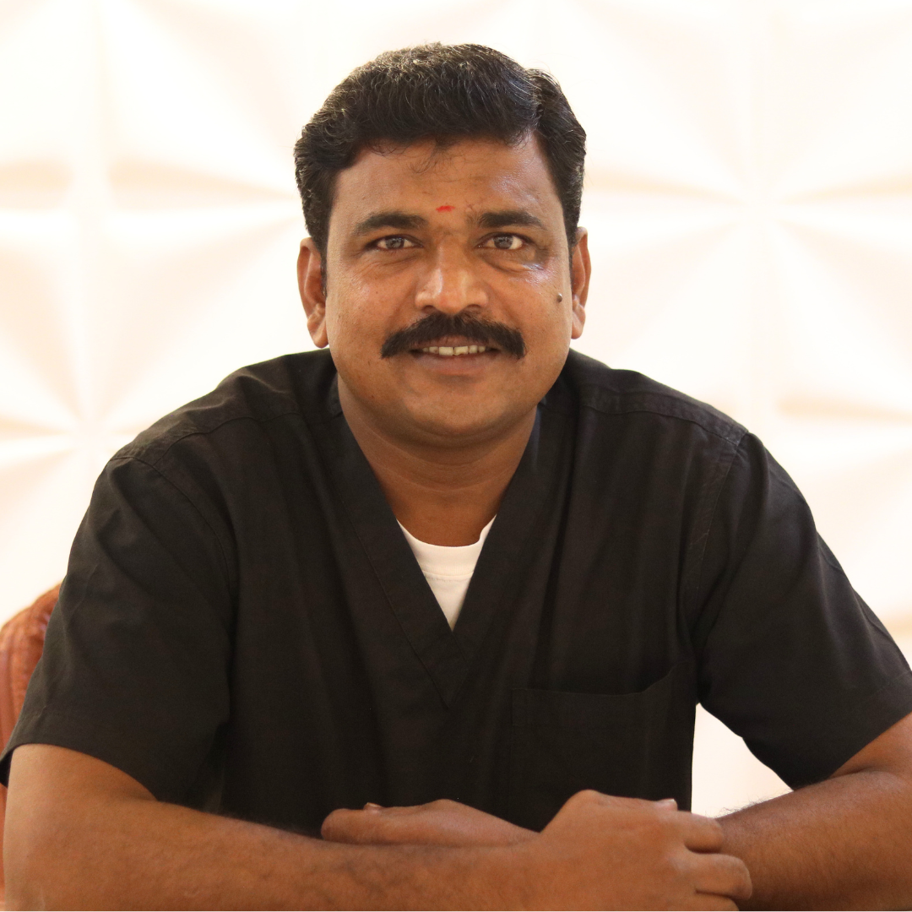
Senior Chairside Clinical Associate
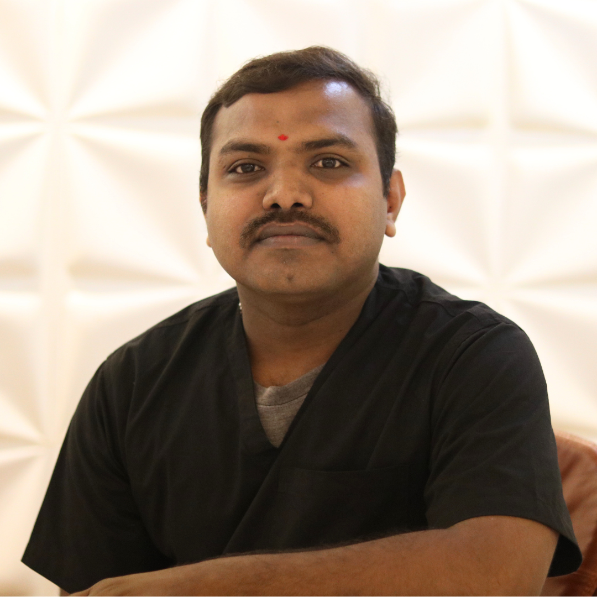
Senior Chairside Clinical Associate
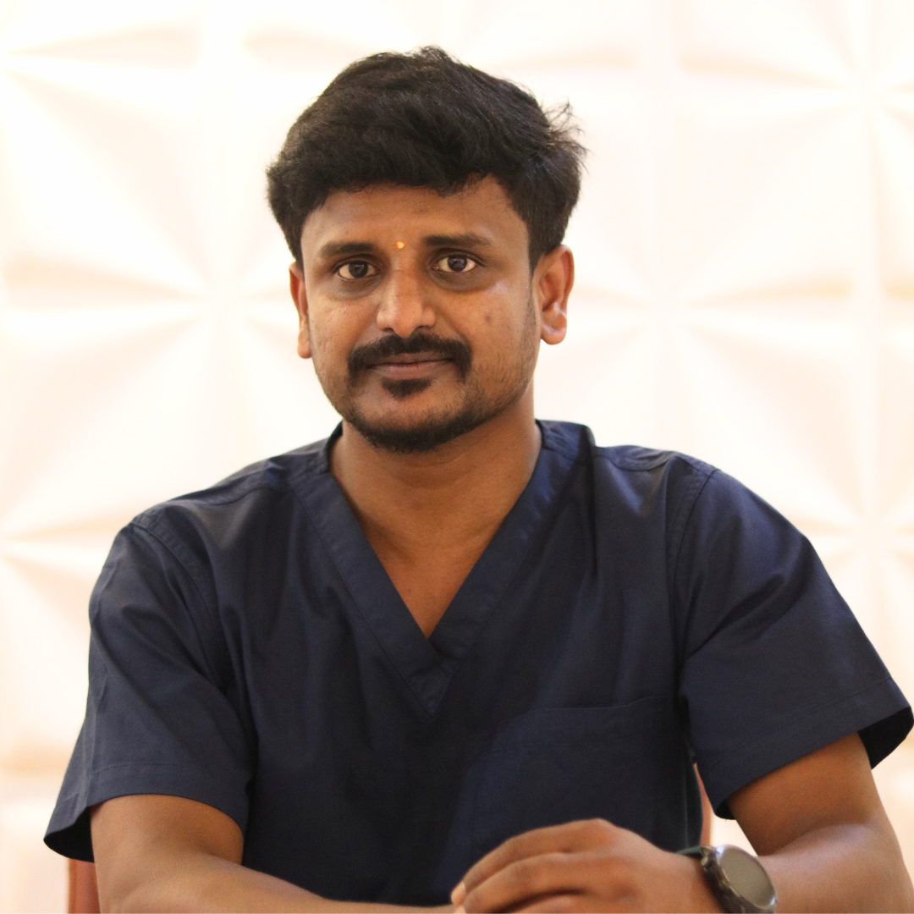
Senior Chairside Clinical Associate
Senior Chairside Clinical Associate
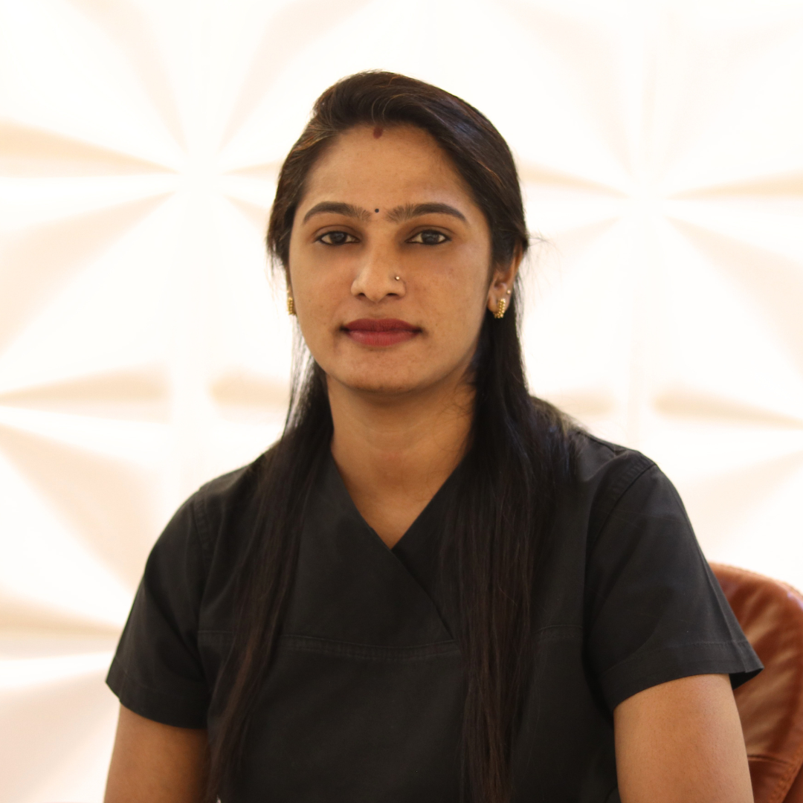
Senior Chairside Clinical Associate
Patient Care Coordinator
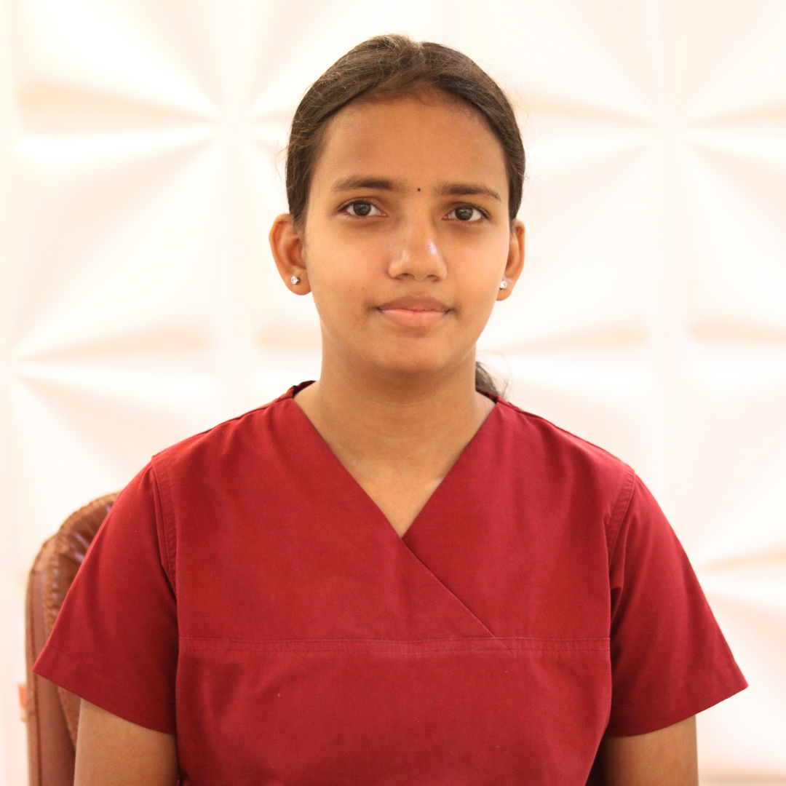
Chairside Clinical Associate

Chairside Clinical Associate
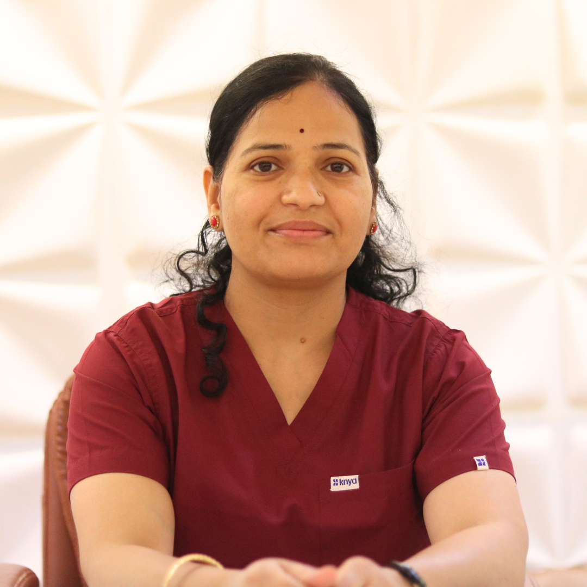
Chairside Clinical Associate

Home Care Coordinator

Home Care Coordinator

Care & Hygiene Associate

Care & Hygiene Associate
Our entire team adheres to internationally recognized clinical protocols, ensuring consistent, safe, and evidence-based care for every patient. Continuous education and certification keep us at the forefront of dental science.
We invest in diagnostic and treatment technology that serves a clear clinical purpose — enhancing accuracy, safety, and patient outcomes.
VELscope is a fluorescence-based diagnostic device used to detect abnormal changes in oral tissues that may not be visible under standard lighting. It helps in identifying early signs of precancerous and cancerous lesions.
Precision Benefit: Enables early detection of abnormal tissue changes, improving chances of timely diagnosis and treatment.
TMJ X-rays evaluate the jaw joint’s structure, position, and movement. They are used to diagnose conditions such as joint dysfunction, pain, clicking, or restricted jaw movement.
Precision Benefit: Provides accurate assessment of joint abnormalities, supporting precise diagnosis and targeted treatment planning.
Laser technology is used for minimally invasive dental procedures involving both soft and hard tissues, including gum treatments and cavity management.
Precision Benefit: Allows highly controlled treatment with minimal damage to surrounding tissues, reducing discomfort and healing time.
Endomotors are advanced electric rotary instruments that provide precise, controlled rotation and torque during endodontic procedures. They automatically reverse direction when encountering resistance, protecting against instrument breakage and ensuring safe, efficient pulp removal and canal preparation.
Precision Benefit: Delivers consistent, controlled motion that reduces treatment time, minimises operator fatigue, and significantly improves the safety and success rate of root canal therapy.
Digital impression systems use intraoral scanners to create precise 3D models of teeth and oral structures, eliminating the need for traditional impression materials.
Precision Benefit: Ensures high accuracy in restorations and treatment planning, improving fit, comfort, and overall outcomes.
Dental operating microscopes provide powerful magnification and illumination that allow our dentists to see and work at a level of detail invisible to the naked eye transforming the precision of every procedure.
Precision Benefit: Dramatically improves accuracy in root canals, crown preparations, and fine restorative work minimising errors and preserving more healthy tooth structure.
A full mouth series consists of multiple intraoral periapical X-rays that together provide a complete view of all teeth crowns, roots, and surrounding bone in a single diagnostic session.
Precision Benefit: Delivers a comprehensive baseline record of the entire dentition, enabling detection of hidden decay, bone loss, root pathology, and early periodontal changes.
An OPG is a single wide-view panoramic X-ray that captures the entire jaw — upper and lower teeth, both joints, sinuses, and surrounding bone in one image taken from outside the mouth.
Precision Benefit: Provides a broad overview of jaw structure, impacted teeth, cysts, and TMJ alignment essential for treatment planning implants, orthodontics, and oral surgery.
A structured professional mentorship initiative bridging dental education and real-world clinical success.
Bridging Dental Education and Real-World Clinical Success
The League of Dentists is a structured professional mentorship initiative founded by Dr. Srivats Bharadwaj and co-founded by Dr. Paramjot Kaur. It is dedicated to transforming dental students and early-career practitioners into confident, practice-ready professionals — bridging the gap between academic training and real-world clinical excellence. Through a personalised and structured approach, the League empowers dentists to lead with clarity, communicate with authority, and build careers of lasting impact.
One-on-one and group mentoring to build case confidence, clinical decision-making, and procedural fluency.
Frameworks for ethical practice growth, team leadership, workflow systems, and financial sustainability.
Master the language of dentistry — patient psychology, consultation frameworks, and case presentation skills.
Structured roadmaps for specialists, generalists, and academic-track dentists to build purposeful careers.
Tailored workshops for BDS & MDS students covering clinical readiness, communication, and professional identity.
A curated network of mentors and peers for accountability, shared learning, and long-term professional support.
Customized programs designed to transform your clinical skills, mindset, and career trajectory.
An exclusive program for dentists and dental students who are demotivated and struggling to find their passion. Rebuild your clinical confidence and reignite your passion for dentistry.
Learn to become a creator of the future rather than a follower. This program encourages dentists to innovate, lead change, and shape the future of dentistry through proactive thinking and strategic planning.
Balance professional advancement with altruistic goals. Learn how to build a charitable dental initiative while maintaining a sustainable, ethical practice that serves your community.
"Children dentistry is the future of dentistry." Master the skills needed to provide exceptional pediatric and special needs dental care with confidence, empathy, and clinical precision.
Develop meta-strategic thinking capabilities through structured group workshops. Learn proven thinking strategies to solve complex clinical and business problems.
Build confidence in handling difficult patients and develop your professional presence. Personalized sessions to enhance your communication and consultation skills.
Bridge the gap between patient expectations and clinical requirements. Learn frameworks to create treatment plans that satisfy both patient needs and clinical best practices.
All programs are customized after an initial consultation to meet your individual learning needs and career goals.
Schedule a ConsultationA focused conversation to understand your goals, gaps, and aspirations.
Personalised curriculum delivered through sessions, workshops, and frameworks.
Apply learning in real-world scenarios with guided feedback and reflection.
Continued access to the community, resources, and milestone reviews.
Whether you are a final-year student, a new graduate, or an experienced practitioner looking to grow the League of Dentists has a structured pathway designed for you.
Real experiences from leaders, professionals, and families who trust our holistic approach.
"The diagnostic depth here gave me confidence that my treatment addressed the real cause, not just the symptom. My oral health has never been better."
"Their preventive monitoring plan has kept me ahead of potential issues. I feel proactive about my health now."
"Vats & Param are easily the best dentists in Bangalore. Dr Srivats and Dr Param are very passionate about what they do, and they literally go out of their way in caring for their patients. I would highly recommend Vats & Param for any dental concerns!"
"I have known Dr. Srivats from Vats and Param clinic for over 15 years. He's not only a very experienced and reputed dentist but also a good friend to his patients. He explains the problem and proposed treatment in detail and makes sure you are comfortable with the approach. He checks-in with you throughout the journey and is available 24/7. The entire team is very professional and friendly. Highly recommend."
"Dr Srivats and Dr Param are the best dentists I have ever come across. In today's world where the healthcare industry is under a dark cloud of doubt from a patient's perspective, I find both of them genuine and honest in their approach. I am happy to have sought their services and wish them all the best!"
"Dr Srivats and team are the most efficient dentists we've ever come across. Their approach is patient centric and the most advanced technology is available right here near us. I can't thank Dr. Srivats and his team enough for making my dentist's trip a great one!"
We’re ready to discuss your personalized care plan. Fill out the form or reach us directly.
Thank you! Your message has been sent.
363, Bannerghatta Main Road opposite Reliance Digital. Pai Layout, Hulimavu, Bengaluru 560076
We are attempting to build a culture of ethical, compassionate, science-driven, comprehensive and whole-body focused healthcare.
Our approach to dentistry goes beyond procedures alone. We value:
We believe the mouth is connected to the rest of health, and where relevant, we encourage broader thinking around prevention, function, lifestyle, oral-systemic understanding and long-term wellbeing.
At Vats & Param, communication is not separate from dentistry — it is part of dentistry.
Documentation is not paperwork — it is professionalism.
Learning is not optional — it is part of growth.
We are not necessarily looking for "finished" doctors. We are looking for doctors who demonstrate:
✔ Curiosity and willingness to learn.
✔ Compassion and strong human values.
✔ Professional maturity and accountability.
✔ Respect for systems, hygiene and documentation.
✔ Good communication and patient-centred thinking.
✔ Openness to mentorship, feedback and continuous improvement.
Technical skills matter. Character, mindset and teachability matter deeply too.
If you join us, you can expect:
This environment may not suit everyone.
But if you are looking for more than "just a job" — if you are seeking growth, purpose, mentorship, challenge and meaningful healthcare culture — this conversation may be worth having.
We look forward to meeting you.
Warm regards,
Dr. Srivats Bharadwaj & Dr. Paramjot Kaur
Vats & Param – The Dentists
Longevity & Whole Body Focused Dentistry
If you'd like to learn more about joining our team, we'd love to hear from you.
Email:
happytohelp@vatsandparam.com
Phone:
+91 9900114151
The content on this website is provided for educational and informational purposes only and does not constitute medical, dental, or healthcare advice. No doctor-patient relationship is created by viewing this website. Treatment recommendations, risks, benefits, alternatives, costs, timelines, maintenance requirements and outcomes vary between individuals. No guarantee or warranty is expressed or implied regarding treatment outcomes, longevity, aesthetics, comfort, symptom resolution, or future oral health.
Use of this website constitutes acceptance of these terms. Content is provided for informational purposes only. Users should not rely on website content as a substitute for professional advice, diagnosis or treatment. Vats & Param – The Dentists reserves the right to modify website content without notice.
We respect your privacy. Information submitted through forms, appointment requests or other communication channels will be handled in accordance with applicable laws. Personal information will not be sold to third parties. Information may be used for appointment scheduling, communication, treatment coordination and service improvement.